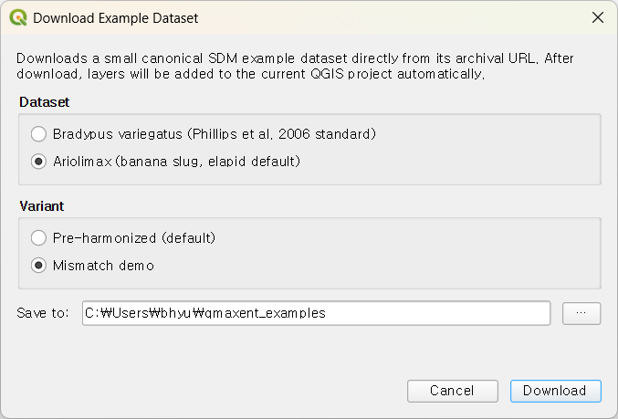
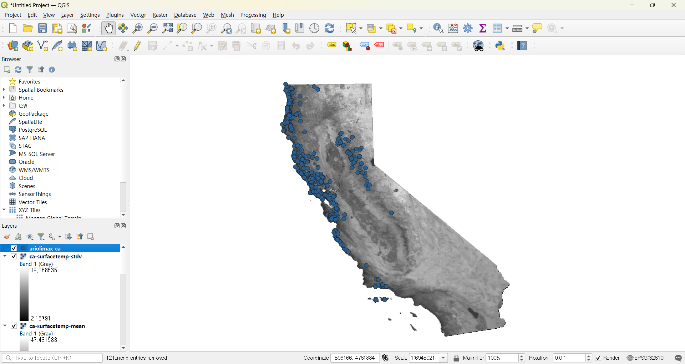
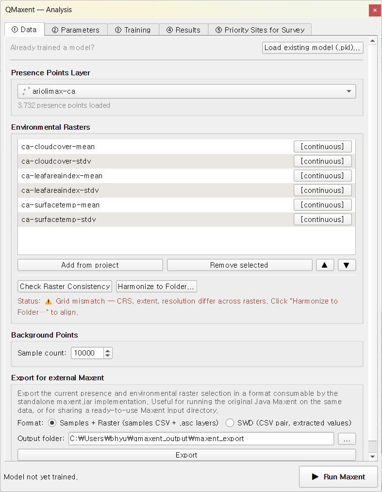
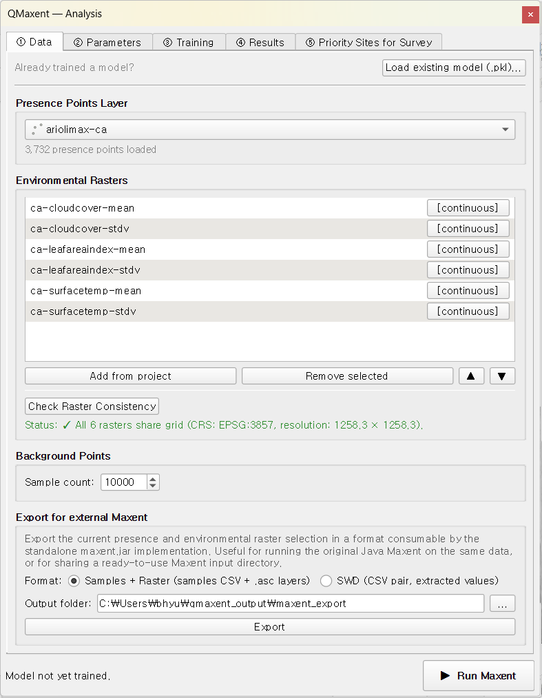
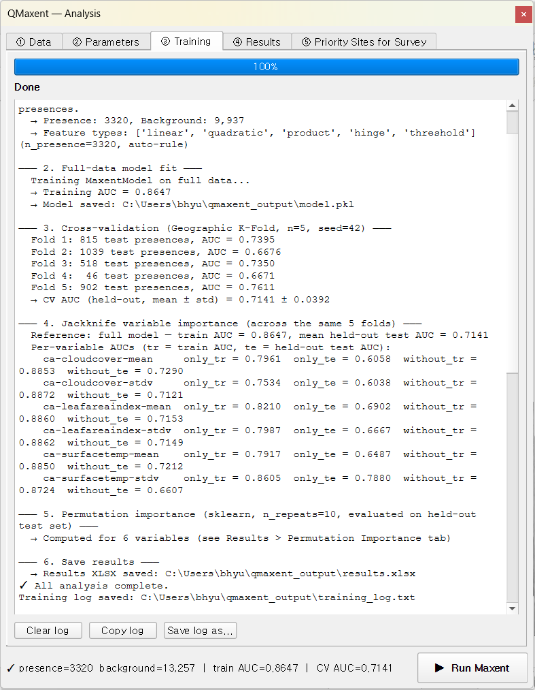
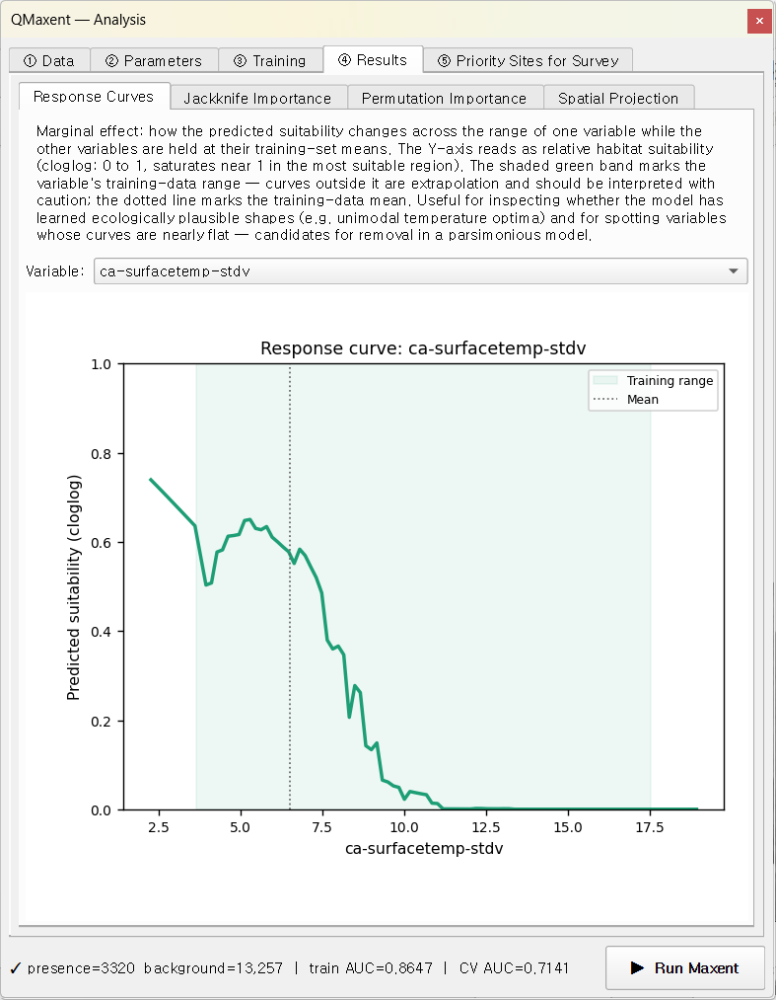
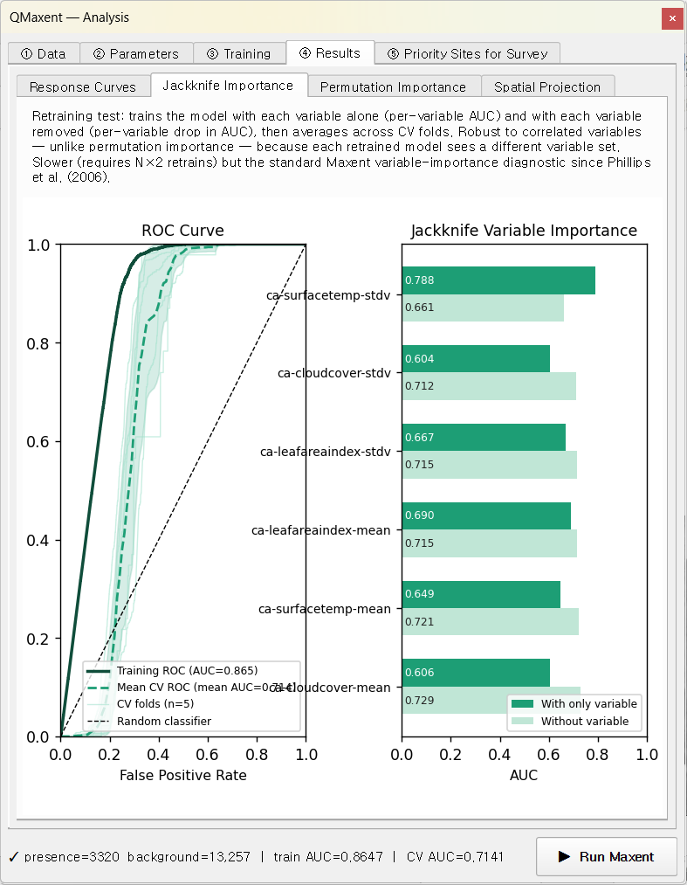
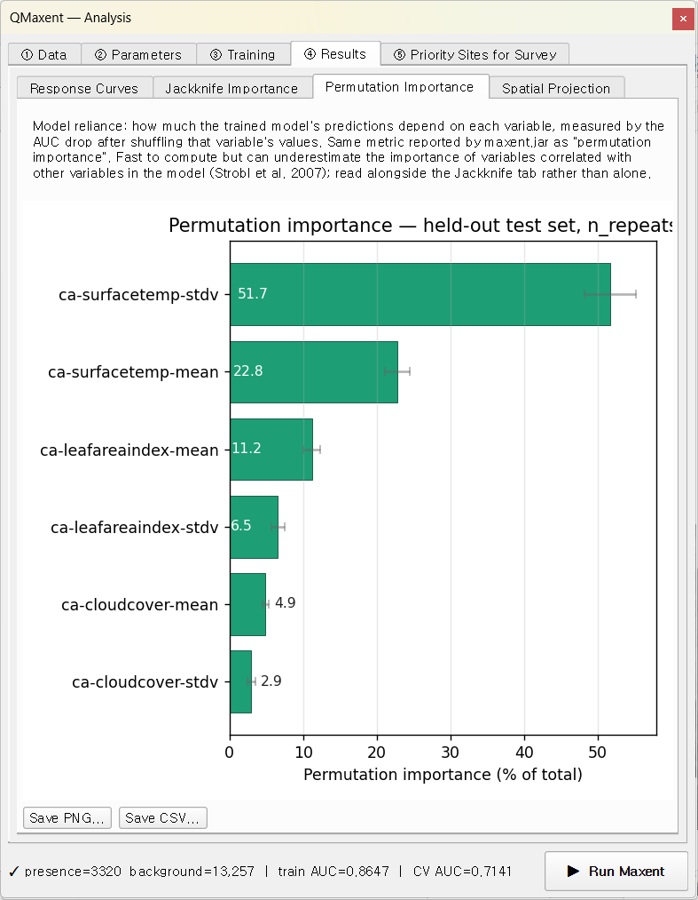
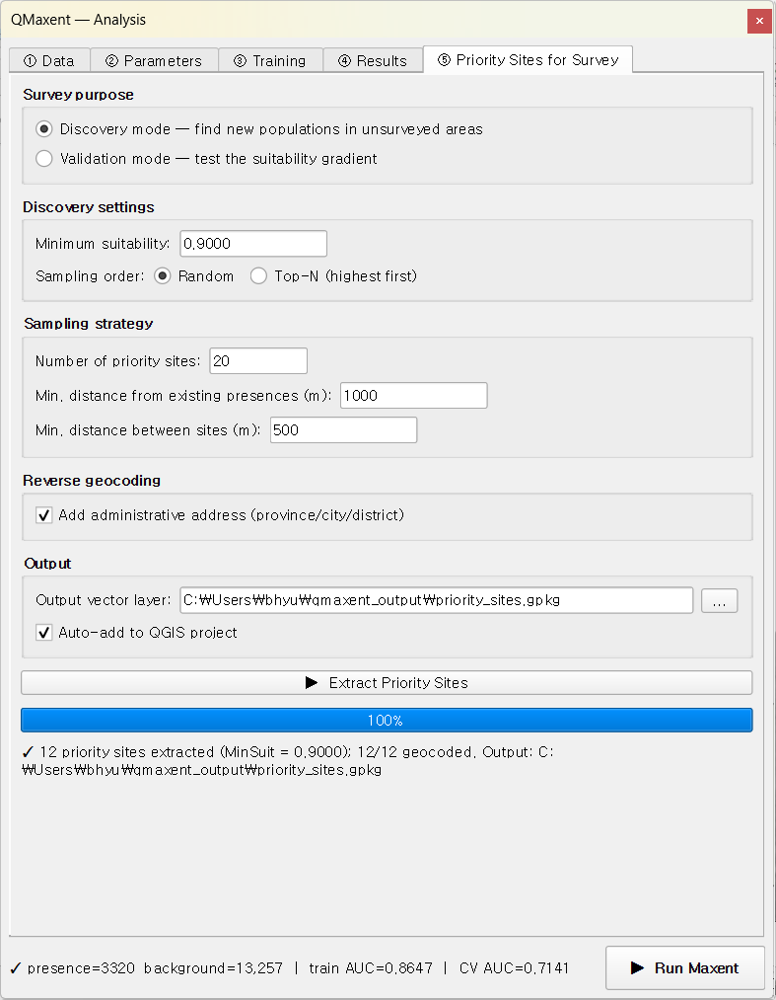
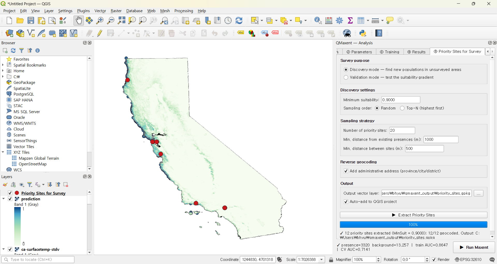

Ariolimax¶
태평양 바나나 민달팽이 Ariolimax columbianus가 두 번째 워크 예제입니다. 이 예제는 Bradypus의 기능 투어와 목적이 다릅니다 — 이 자료는 의도적으로 messy한 상태로 제공됩니다. 환경 래스터들의 CRS · 범위 · 해상도가 서로 일치하지 않습니다. 이 예제에서는 QMaxent의 Check Raster Consistency 프리플라이트와 Harmonize to Folder… 워크플로우를 따라가며, 그렇지 않으면 조용히 발생하는 실패 모드와 이를 한 번의 클릭으로 해결하는 방법을 함께 살펴봅니다.
1. 자료¶
Ariolimax 자료는 elapid에 기본 번들된 자료입니다. Download Example Dataset 다이얼로그에서 두 가지 Variant(변형) 중 하나를 선택할 수 있습니다.

- Pre-harmonized (default) — 동일한 6개 래스터가 이미 공통 격자로 재투영·재샘플링된 상태로 제공됩니다. 모델 적합부터 곧장 시도하고 싶을 때 사용합니다.
- Mismatch demo — 원본 타일들이 원래의 CRS · 범위 · 해상도를 그대로 유지한 상태입니다. Check + Harmonize 도구를 실습할 때 사용합니다.
본 가이드는 Mismatch demo variant를 사용합니다. Download를 누르면 캘리포니아 해안 산맥 영역에 래스터들이 자동으로 추가됩니다.

시각적으로는 자료가 이미 통합된 것처럼 보입니다. 그러나 각 래스터 타일은 서로 다른 원격탐사 파이프라인에서 생성되어 서로 다른 투영법과 해상도를 물려받았습니다 — 이것이 바로 Maxent를 조용히 망가뜨리는 상황입니다.
2. 격자 불일치 문제¶
Plugins → QMaxent → QMaxent Analysis를 엽니다. ① Data 탭에서
ariolimax-ca 출현점 레이어(3,732점)를 선택하고 Add from project를
눌러 로드된 래스터 6개를 일괄 등록합니다(ca-cloudcover-mean,
ca-cloudcover-stdv, ca-leafareaindex-mean, ca-leafareaindex-stdv,
ca-surfacetemp-mean, ca-surfacetemp-stdv). 이후
Check Raster Consistency를 누릅니다.

상태 줄이 호박색으로 바뀌며 다음과 같이 보고합니다.
⚠ Grid mismatch — CRS, extent, resolution differ across rasters. Click "Harmonize to Folder…" to align.
중요한 점은 Run Maxent 버튼이 차단되지 않는다는 것입니다 — Maxent 자체는 여전히 결과 수치를 산출합니다. 그러나 그 수치는 조용히 잘못된 값입니다. 공변량이 각 출현점 아래에 명목상 위치한 셀에서 추출되지만, 실제로는 서로 어긋난 래스터의 셀이기 때문입니다. 이는 실무 SDM에서 가장 흔한 silent-failure이며 본 프리플라이트가 존재하는 이유입니다.
3. Harmonize to Folder… 실행¶
불일치가 감지되는 즉시 Check Raster Consistency 옆에
Harmonize to Folder… 버튼이 나타납니다. 클릭 후 출력 폴더를
지정합니다. QMaxent는 가장 고해상도 래스터를 기준 격자로 선택하고,
내부에서
gdalwarp을 사용해 다른
래스터들을 그 격자로 재투영합니다(범주형은 nearest-neighbour, 연속형은
bilinear). 새 GeoTIFF가 지정 폴더에 작성되어 자동으로 프로젝트에
로드되고, 원본 래스터는 QMaxent 래스터 목록에서 제거됩니다.
Data 탭이 갱신되어 정합된 스택을 보여줍니다.

상태 줄이 녹색으로 바뀝니다.
✓ All 6 rasters share grid (CRS: EPSG:3857, resolution: 1258.3 × 1258.3).
정합된 래스터는 숫자 접두사(00_, 01_, …)를 받아 순서가 고정됩니다.
이 접두사는 .qgz 저장/재로드 사이클을 거쳐도 유지됩니다 — 변수 순서는
모델의 정체성의 일부이며, 접두사는 그 순서를 파일시스템 수준에서도
가시화합니다.
4. 모델 실행¶
스택이 정합된 후의 워크플로우는 Bradypus와 동일합니다. ② Parameters에서 기본값을 그대로 받고 ▶ Run Maxent를 누른 뒤 학습이 완료될 때까지 기다립니다.

탭 하단 상태 줄에 요약이 표시됩니다 —
presence=3320 background=13,257 | train AUC=0.8647 | CV AUC=0.7141.
로그 읽기:
- Full-data model —
Training AUC = 0.8647. - Cross-validation — Geographic K-Fold n=5, seed=42:
| Fold | 검증 출현점 수 | AUC |
|---|---|---|
| 1 | 815 | 0.7395 |
| 2 | 1,039 | 0.6676 |
| 3 | 518 | 0.7350 |
| 4 | 46 | 0.6671 |
| 5 | 902 | 0.7611 |
통합 평균 ± 표준편차 = 0.7141 ± 0.0392.
± 0.04라는 매우 작은 표준편차(Bradypus의 ± 0.075와 비교)는 Ariolimax의 출현점이 훨씬 많고 균등하게 분포한 결과입니다 — 각 공간 fold가 한 줌이 아닌 수백 개의 출현점을 포함할 때 fold별 AUC가 안정됩니다.
5. 변수 행동¶
반응 곡선¶
ca-surfacetemp-stdv(지표 온도 변동성)가 가장 강한 단독 신호를
가지며, 시원하고 습한 미기후에 의존해 활동하는 종에 생물학적으로
타당한 결과입니다.

곡선은 온도 변동성이 ~ 2 K 이하로 떨어질수록 적합도가 높아지고 ~ 8 K 이상에서는 0에 근접하게 떨어집니다 — 수분 의존 종이 열적으로 안정된 해양성 기후를 선호한다는 고전적 패턴입니다.
Jackknife 중요도¶
Jackknife 패널은 각 변수의 단독 능력과 제거 시 손실을 함께 표시합니다.

ca-surfacetemp-stdv와 ca-leafareaindex-mean이 선두이며, cloud-cover
변수들이 가장 약합니다. "without" 막대가 0.85 위에 몰려 있는 것은
Bradypus와 동일한 상관 패턴 논리입니다.
Permutation 중요도¶
Permutation 관점은 전체 중요도를 모든 변수에 분배하므로 maxent.jar의 변수별 percentage 표와 직접 비교 가능합니다.

6. 정합 전·후 모델 비교¶
교육적 차원에서 정합되지 않은 스택으로 모델을 한 번 돌려 보는 것을 강력히 권장합니다. Maxent는 래스터 처리가 관대하므로 완성된 모델과 AUC를 산출하지만, 그 AUC는 보통 정합 후 결과보다 0.05–0.10 더 높게 나옵니다 — 모델이 더 나아져서가 아니라, 공변량 어긋남이 만든 가짜 패턴을 모델이 학습하기 때문입니다. 교차검증 격차(학습 vs CV AUC)도 함께 벌어집니다.
결론을 내리기 전에 항상 Check Raster Consistency를 실행하세요.
7. 우선조사 후보지¶
투영 후 ⑤ Priority Sites for Survey로 이동하여 Discovery 모드로 후보지를 추출합니다. Ariolimax의 좁은 연구지역에서는 기본값이 잘 작동합니다.

후보지는 적합도 지도가 강조한 해안 산맥 일대에 분포하며, 결과 GeoPackage를 그대로 현장에 가져갈 수 있습니다.

이 예제가 시연하는 것¶
- 두 개의 예제 variant (Pre-harmonized vs Mismatch demo)로 동일 자료를 교육적 의도에 따라 다르게 사용.
- 래스터 불일치에 의한 Maxent의 silent-failure 모드.
- QMaxent의 프리플라이트 + 정합 도구가 프로젝트를 망가뜨릴 실수를 한 번의 클릭으로 해결.
- 표본 크기가 공간 CV 변동성에 미치는 영향 — 3,732개 출현점은 Bradypus의 116개보다 훨씬 작은 ± std를 만듭니다.
본인의 작업에도 같은 습관을 가져가세요. 새 래스터 스택을 구성할 때마다 학습 전에 Check Raster Consistency를 실행하고, 실패하면 정합부터 한 뒤 학습합니다.